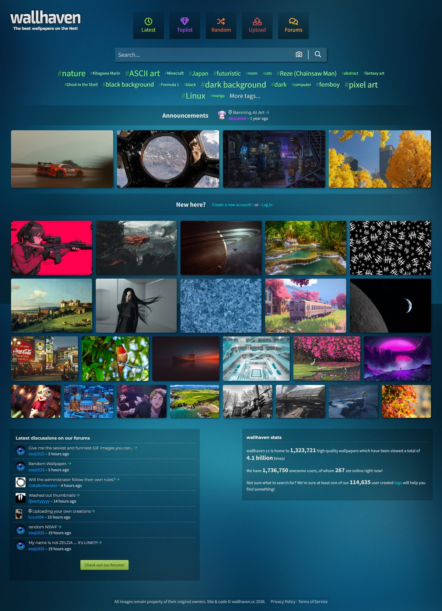

wallhaven 翻到底才敢说：四个官方不宣传但真好用的搜图入口
你以为 wallhaven 就是搜关键词看图下载？我翻了三天，挖到四个藏在筛选条、搜索框角落和 URL 参数里的隐藏功能——按主色搜壁纸、以图找相似、比例筛选潜规则、seed 翻页不重样，每个都能让找图效率翻倍。
你打开 wallhaven官网，输入关键词、点 Latest、翻三页下载一张图，对吧？我以前也这么用了快三年。直到前几天为了给新配的 21:9 带鱼屏找壁纸，被逼得把搜索页的筛选面板一层层点开，又翻到 URL 参数里抠细节——才发现这个站藏了太多官方不宣传但真好用的东西。
第一个：按主色搜壁纸，比关键词准十倍
搜索页筛选条里那个 Colours 面板，一排小色块——你可能以为这就是个标签过滤。其实每张入库图都会被机器算出一个主色，色块点选后，结果里只剩以那个颜色为主导的图。
这和标签搜完全不是一回事。"sunset" 标签下的图可能有亮橙也可能有暗紫；但机器算出来的主色是客观属性，不会像标签那样漏打或打错。wallhaven 用的是 29 个固定色值，不是连续色环——深色系、红橙黄、绿、蓝紫、粉棕各占几格。想配深色任务栏就搜深灰或纯黑，想配浅色主题就搜白色浅灰主导的图，撞色玩法更简单：先按题材搜（比如星空），再在结果里换不同色块对比，快速找到色调统一的成组壁纸。
我现在搜图的流程是：先按颜色定基调，再在结果里加标签收窄。命中率比以前纯靠关键词高太多。
第二个：搜索框右侧那朵小相机，真的能用
首页搜索框右边有个相机图标——我用了三年才发现它不是装饰。点一下就能上传一张图，wallhaven 会帮你找同主色、同色系、同风格的相似图。
这个入口藏得真深，连官方首页导览都只提了一句"是用图片找相似图的入口"就没了。实际用起来太爽了：我把一张截好的桌面主题色参考图扔进去，结果页直接出来二十几张色调完全统一的壁纸——以前手工刷半小时标签页才凑得出来的东西，现在一分钟搞定。对多屏同主题的人来说，这个功能是刚需级的效率提升。
第三个：比例筛选的潜规则，选大不选小
宽高比决定一张图铺在你屏幕上要不要裁边。你可能知道 21:9 屏要搜 21:9 的图、MacBook 要搜 16:10 的——但有个潜规则没人说：找不到原生比例时，选略大一号的图再让系统居中裁切。
比如 21:9 屏搜不到太多图，临时用 16:9 的 4K 图 + 系统裁切过渡，比硬凑一张小分辨率的 21:9 图强得多。比例筛选配合分辨率参数一起用，结果才真正贴合屏幕——我以前只开分辨率不开比例，下下来的图要么上下裁要么左右扯，白浪费了好图。
第四个：Random 模式的 seed，随机也能翻页不重样
顶栏那个 Random 按钮大家都知道——点一下出来一堆随机图。但你可能没注意：Random 模式的 URL 里有个 seed 参数。改一下 seed 的值，就能得到完全不同的一批随机图，而且这批图在同一个 seed 值下每次刷新都是一样的。
这个是纯 URL 参数层面的隐藏功能，官方文档里对它也没详细写——你得自己改地址栏才能玩。我现在把 seed 设成自己的生日或桌面主题色的十六进制值，每次想刷随机图就换一个 seed，既能保持"碰运气"的感觉，又不会翻到重复的图。适合那些没有明确搜图目标、纯粹想找灵感的人。

一个坑别忘了：举报的纯度兜底
讲完找图技巧，说一个社区层面的隐藏规则：举报时 SFW 和 Sketchy 之间犹豫，按 Sketchy 报。
这条规则不是写给上传者看的，是写给举报者看的。wallhaven 的审核团队怕的是越界内容混进全年龄流——宁可让图少一点曝光，也不能漏报。误报的成本远低于漏报，官方甚至在 FAQ 里明确说了这条兜底，但大多数用户根本没留意。举报不是私刑，不喜欢 ≠ 违规，但纯度拿不准的时候，多报比漏报好。
收尾
wallhaven 不是那种满屏弹窗教你怎么用的站——它的好功能都藏在筛选条的折叠面板、搜索框的边角图标、和那些没人看的 URL 参数里。把它用透，找图这件事就从"翻三页碰碰运气"变成"三分钟精准命中"。
如果你也想把 wallhaven 翻到底，我整理的参数表和筛选心得放在了 GitHub、Gitee、GitCode 三个仓库，方便随时查。